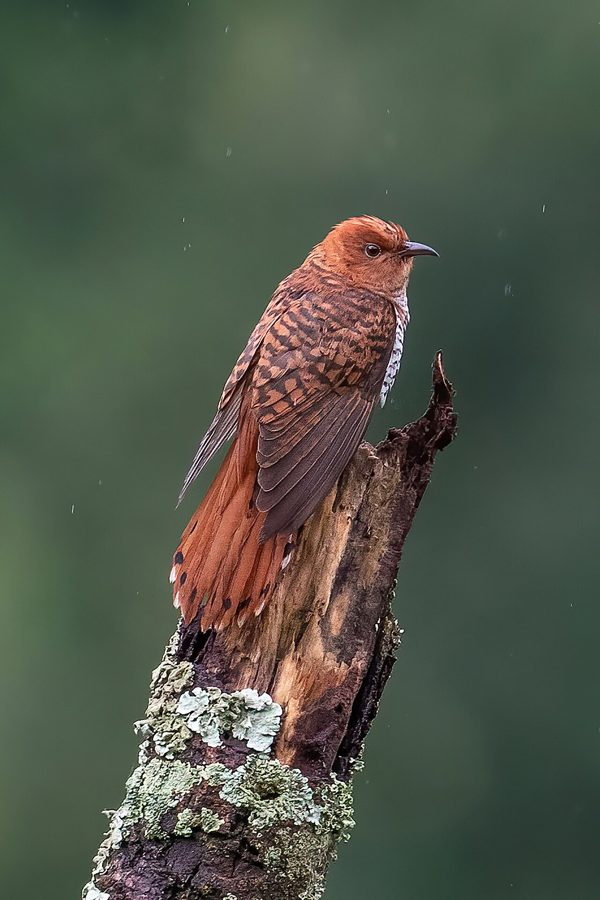

ग्रे-बेलीड कुक्कूGrey-bellied Cuckoo
Cacomantis passerinus · Cuculidae · BRD-0255

- Scientific name वैज्ञानिक नाम
- Cacomantis passerinus (Vahl, 1797)
- Family कुल
- Cuculidae
- Hindi हिंदी
- ग्रे-बेलीड कुक्कू
- Local names स्थानीय नाम
- grey-bellied cuckoo, grey bellied cuckoo, cuckoo
- Status here यहाँ की स्थिति
- native
- Movement आवागमन
- Summer visitor
- Known from कहाँ दर्ज
- Others have published records from the Basti–Ayodhya districts बस्ती–अयोध्या के ज़िलों से दूसरों के प्रकाशित अभिलेख
- IUCN IUCN
- LC
- Review समीक्षा
- audited and independently read
When to look कब देखें
Summer visitor ग्रीष्मकालीन प्रवासी. Expected mainly in April, May, June, July, August, September, October. मुख्यतः अप्रैल, मई, जून, जुलाई, अगस्त, सितंबर, अक्टूबर में अपेक्षित।
Arrives in April–May from tropical Asia; departs by September–October. Breeds throughout eastern UP. Expected in deciduous and mixed forests, woodland edges, and cultivated areas. All migrants and visitors →
Uses and possibilities उपयोग और संभावनाएँ
Drawn from the documented uses in the profile below, where each is labelled traditional, current or a research lead. All uses →
Tell it apart from इनसे अलग पहचानें
ग्रे-बेलीड कुक्कू / Grey-bellied Cuckoo
Cacomantis passerinus (Vahl, 1797) — Cuculidae
ग्रे-बेलीड कुक्कू — यह एक छोटी, धूसर कोयल है जो गर्मियों में मई के महीने में अपनी आवाज़ देती है। इसकी आवाज़ अलग-अलग सुरों में "पीऊ पीऊ पीऊ" जैसी सीटी देती है। अन्य कोयलों की तरह यह अपने अंडे दूसरी चिड़ियों के घोंसलों में देता है। गर्मियों में जंगलों और बागों में सुना जाता है।
Quick Identification त्वरित पहचान
| Feature | Description |
|---|---|
| Size | Small cuckoo; 23–25 cm long |
| Plumage | Grey or blue-grey overall; distinctive |
| Upperparts | Blue-grey or slate-grey |
| Underparts | White or pale grey; underparts variable |
| Tail | Graduated tail; blue-grey with dark barring |
| Bill | Curved, pointed; pale base |
| Eyes | Bright yellow or pale eye-ring |
| Behaviour | Active, restless; often perches openly; vocal |
| Vocalisations | Distinctive two-note call: "piu-piu" or similar |
Field tip: A small, distinctive grey cuckoo with bright yellow eye-ring. Often heard before seen. Males are more active and vocal. Often perches openly on branches and wires, which distinguishes it from many other small cuckoos.
हिंदी — कैसे पहचानें:
छोटी, धूसर कोयल।
पीली आँख की रेखा।
"पीऊ-पीऊ" की खास आवाज़।
गर्मियों में सुना जाता है।
Morphology आकारिकी
Biometrics:
| Measurement | Range |
|---|---|
| Total length | 230–250 mm |
| Wing (flattened chord) | 130–145 mm |
| Tail | 100–115 mm |
| Bill | 18–22 mm |
| Tarsus | 14–17 mm |
| Weight | 25–35 g |
Size: 23–25 cm long; wingspan 30–36 cm. Weight 25–35 g. A small, compact cuckoo.
Plumage (male): Blue-grey or slate-grey overall. Crown and upperparts uniformly grey. Tail blue-grey with darker barring or mottling. Underparts pale grey to white. Breast and flanks may show rufous wash.
Plumage (female): Similar to male but underparts often show more buff or rufous tones. Underparts paler, often off-white or buff.
Eyes and face: Distinctive bright yellow or pale yellow eye-ring (orbital ring). Lores dark.
Bill: Curved, pointed, typical of cuckoo. Pale base, dark tip.
Legs and feet: Short, dark.
Tail: Graduated tail; blue-grey with darker bars or mottling, distinctive.
Sexes: Males more blue-grey; females show more rufous underparts.
Vocalisations. Call repertoire:
- Main call: Two-note whistle "piu-piu" or "pee-pee", often repeated in series. Males particularly vocal in breeding season.
- Variations: Sometimes three notes; rhythm and pitch variable.
- Flight call: Soft chirps.
हिंदी: "पीऊ-पीऊ" या "पीऊ-पीऊ-पीऊ" की आवाज़। गर्मियों में अक्सर सुना जाता है।
Behaviour & Ecology व्यवहार और पारिस्थितिकता
Insectivorous: Feeds on insects, particularly caterpillars and other small insects in trees.
Feeding: Gleans insects from foliage and twigs; sometimes catches insects in flight.
Brood parasite: Like all cuckoos, lays eggs in nests of host species. Hosts include various small birds including warblers, sparrows, and drongos.
Breeding: Males very vocal during breeding season, calling from exposed perches to establish territory. Competition between males for breeding success.
Social behaviour: Often solitary or in pairs during breeding season. Less gregarious than some other cuckoos.
Active and restless: Constantly moves through trees and bushes, actively foraging. Perches openly, making it relatively visible.
Habitat use: Prefers open woodland, edges, and cultivated areas with scattered trees. Less dependent on dense forest than some cuckoos.
हिंदी: कीड़े खाता है। दूसरी चिड़ियों के घोंसलों में अंडे देता है। गर्मियों में बहुत बोलता है। खुले पेड़ों पर बैठता है।
Life Cycle / Phenology जीवन चक्र
Summer breeder: Arrives in eastern UP from April–May. Begins breeding immediately upon arrival. Departs August–October after breeding season.
Breeding range: Tropical Asia, from southern India through to Southeast Asia. Breeds April–August in India.
Migration: Long-distance migrant. Returns to breeding grounds in India annually.
Courtship and breeding: Males highly vocal throughout breeding season, calling from dawn. Females locate suitable host nests and lay eggs. Chicks are raised by host species.
Incubation and fledging: Handled entirely by host species. Timing depends on host species breeding schedule.
Moult: Pre-basic moult occurs before departure; complete.
Timing in UP: Arrival April–May; breeding June–August; departure August–October. Peak calling May–July.
हिंदी: अप्रैल-मई में आता है, अगस्त-अक्टूबर तक रहता है। गर्मियों में अंडे देता है। अन्य चिड़ियों के घोंसलों का उपयोग करता है।
Host Plants or Prey आहार
| Food Type | Examples | Feeding Behaviour |
|---|---|---|
| Caterpillars | Small leaf-eaters, various Lepidoptera larvae | Glean from foliage and twigs |
| Small insects | Grasshoppers, crickets, small beetles | Pick from trees and foliage |
| Insect larvae | Small beetle larvae, other invertebrates | Glean from bark and leaves |
| Occasionally fruit | Small berries | Glean from trees |
हिंदी: मुख्य रूप से कीड़े खाता है। इल्लियों को बहुत पसंद करता है। पेड़ों के पत्तों और शाखाओं से कीड़े निकालता है।
Predators / Natural Enemies शत्रु
- Avian predators: Common Kestrel, Shikra, crows, Indian Eagle-Owl
- Mammalian predators: Mongoose, rat, squirrel
- Nest parasites: Other cuckoos, corvids
- Chick predators: Crows, magpies, other nest predators
हिंदी: शिकारी चिड़ियाँ इसका शिकार करती हैं। गौरैया और कौवे इसके अंडों को नुकसान पहुँचा सकते हैं।
Agricultural / Human Relevance कृषि प्रासंगिकता
Protected status: All wild birds in India are protected under the Wildlife (Protection) Act 1972. Hunting is illegal.
Natural pest control: Feeds extensively on caterpillars and other insect pests. Helps control agricultural pests.
Agricultural interactions: Presence in cultivated areas with scattered trees indicates diverse insect fauna. Beneficial for pest control.
Cultural significance: Known as "koil" or "papihā" in Hindi and local languages. Mentioned in classical literature and poetry.
Ecological indicator: Presence indicates adequate insect food supply; indicator of habitat health.
हिंदी: यह पक्षी विधि अधिनियम 1972 के अंतर्गत संरक्षित है। फसलों के कीड़ों को खाता है और उपयोगी है। संस्कृत और हिंदी साहित्य में प्रसिद्ध है।
Expected Locally स्थानीय रूप से अपेक्षित
Not a field record. Written from published accounts for eastern Uttar Pradesh. No confirmed local sighting yet — if you have seen it, that is what the atlas needs.
अभी तक स्थानीय पुष्टि नहीं। यह विवरण प्रकाशित स्रोतों से है, किसी अवलोकन से नहीं।
Grey-bellied Cuckoo is a summer breeder across the Indo-Gangetic plain and is expected to breed throughout eastern Uttar Pradesh. GBIF holds published records from these districts. The species breeds in deciduous and mixed forests, woodland edges, and cultivated areas with scattered trees. Peak calling and vocal activity occur from May to July, making detection relatively easy during this period. The distinctive two-note call "piu-piu" or variations are good identifying features. A first record would require a dated photograph with GPS coordinates and date, submitted through the About page; alternatively, a recording of the distinctive two-note call would constitute strong evidence, particularly during the breeding season (April–October).
Distribution वितरण
Global range: Tropical Asia from southern India and Sri Lanka eastward through Southeast Asia to Indonesia.
In India: Distributed as a breeding resident in suitable habitats across central and southern India; also a summer breeding visitor to northern India.
In Uttar Pradesh: Summer breeding visitor throughout the state in suitable habitats. Breeds in deciduous forest, woodland, and cultivated areas.
In Basti district / eastern UP: Summer visitor and breeding resident. Expected April–October in deciduous forest, woodland edges, and areas with scattered trees.
Research Questions शोध प्रश्न
- Which bird species serve as primary hosts for Grey-bellied Cuckoo in eastern UP, and how does host selection vary seasonally?
- How successful are Grey-bellied Cuckoo chicks in different host species' nests, and what factors influence fledging rates?
- क्या कृषि क्षेत्रों में इल्लियों की आबादी में बदलाव से इस कोयल की मौजूदगी प्रभावित होती है?
- What is the spatial distribution of calling males in different habitat types within eastern UP during breeding season?
- How does the two-note call repertoire and calling frequency of Grey-bellied Cuckoo vary throughout the breeding season? (A child can record and count calls at dawn.)
- What is the population trend of Grey-bellied Cuckoo in the region, and how does forest and woodland cover affect breeding numbers?
Similar Species मिलती-जुलती प्रजातियाँ
| Species | Key Difference | Hindi | Field Rule | |
|---|---|---|---|---|
| [[asian_koel\ | Asian Koel]] (Eudynamys scolopaceus) | Much larger (42–46 cm); male entirely black, female brown with spots; different call | कोयल | Grey-bellied is much smaller, entirely grey, has distinctive yellow eye-ring, and different two-note call. |
| [[common_hawk_cuckoo\ | Common Hawk-Cuckoo]] (Hierococcyx varius) | Larger (30–33 cm); streaked, not uniform grey; lacks yellow eye-ring; different call | चील-कोयल | Common Hawk-Cuckoo is larger and has streaked plumage. Different habitat preference. |
| Banded Bay Cuckoo (Cacomantis sonneratii) | More reddish-brown underparts; more rufous colouring; different call | बाइड कोयल | Grey-bellied is more uniformly grey. Banded Bay shows rufous underparts and different colouration. |
Field rule: A small, compact, uniformly grey cuckoo with bright yellow eye-ring, giving a distinctive two-note "piu-piu" call is Grey-bellied Cuckoo. Males are particularly vocal during breeding season.
Taxonomy & Classification वर्गीकरण
Original description. Described by Vahl in 1797. Type locality: India.
Subspecies. C. passerinus passerinus (Vahl, 1797) — Indian and Southeast Asian populations. Monotypic or with minimal subspecific variation.
Family and order placement. Order Cuculiformes; family Cuculidae (cuckoos). Genus Cacomantis contains several Asian cuckoo species, characterized by small size and brood parasitism.
Phylogenetic notes. Cacomantis passerinus is closely related to other Cacomantis species, particularly the Asian cuckoos. Related to other brood-parasitic cuckoos across the region.
IUCN status rationale. Assessed as Least Concern (LC) globally. Populations are stable and widely distributed. The species is adaptable to various habitat types with scattered trees and adequate insect food supply.
हिंदी: यह विश्वभर में कई स्थानों पर पाया जाता है। भारत में गर्मियों में आता है। कानून से पूरी तरह सुरक्षित है।
Photo Gallery फोटो गैलरी
No photos yet — add field photos to media/species/grey_bellied_cuckoo/ and run node scripts/sync_photos.js.
Wanted photos:
- Male showing grey plumage and yellow eye-ring
- Female showing more rufous underparts
- Individual perched openly on branch
- Close-up of head showing yellow eye-ring
- In flight
- Adult with host species nest
References संदर्भ
- Vahl, M. (1797). [Original description]. [publication details needed — see GBIF]
- Ali, S. & Ripley, S.D. (1987). Handbook of the Birds of India and Pakistan. Vol. 8. Oxford University Press, New Delhi. Pp. 224–227.
- Grimmett, R., Inskipp, C. & Inskipp, T. (2011). Birds of the Indian Subcontinent. 2nd ed. Christopher Helm, London. Pp. 374–375.
- Payne, R. B. (2005). The Cuckoos. Oxford University Press. Pp. 234–236.
- GBIF Occurrence Data — Cacomantis passerinus, India.
- BirdLife International (2023). Cacomantis passerinus. IUCN Red List of Threatened Species. IUCN, Cambridge.
Source file: species/fauna/birds/grey_bellied_cuckoo.md